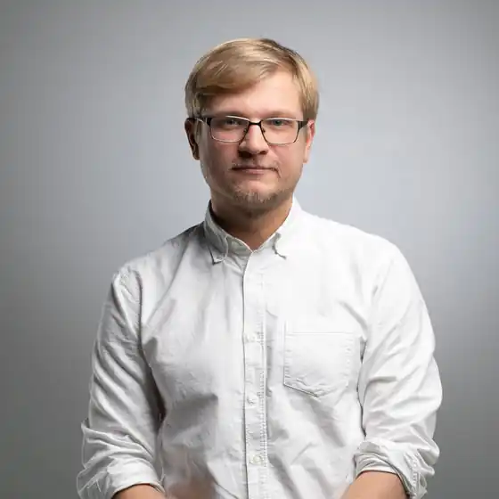
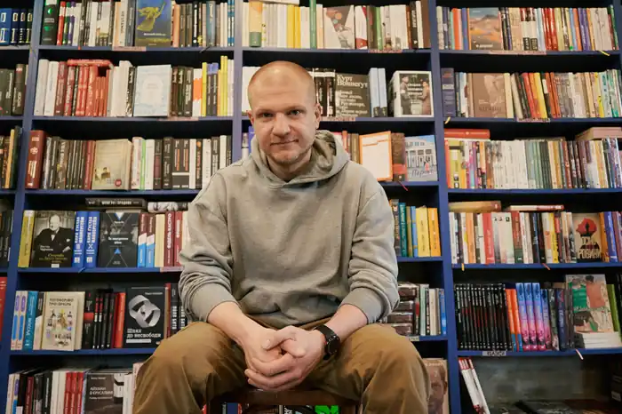

Михед Олександр Павлович — український письменник, культуролог, куратор мистецьких проєктів.
Олександр Михед народився 21 квітня 1988 року в Києві. Закінчив Київський національний університет імені Тараса Шевченка. Кандидат філологічних наук.
Автор численних публікацій (понад 150) у провідних українських ЗМІ (від "Дзеркала тижня" й "Кореспондента" до "Українського тижня" і "Сучасності") та виданнях Німеччини, Сербії, Польщі, Чехії. Живе та працює в Києві. Автор художніх книжок "Амнезія" (2013), "Понтиїзм" (2014), "Астра" (2015), арт-буку "Мороки" (разом із художницею Сонею Мельник, 2016), нон-фікшн дослідження "Бачити, щоб бути побаченим: реаліті-шоу, реаліті-роман та революція онлайн" (2016) та збірки оповідань "Транзишн" (2017). Арт-директор видавництва ArtHuss. В якості відповідального редактора підготував до друку близько 20 видань. Лектор освітніх проектів KMBS, LitOsvita, Botan, Світло, Культурного проекту. Веде авторський курс із креативного письма "Коротше пиши", створений разом із бібліотекою Botan. Здійснив українською переклад автобіографії Марини Абрамович "Пройти крізь стіни" (2018). Учасник літературних резиденцій у Фінляндії, Латвії, Ісландії, США та Франції. Куратор літературної програми PinchukArtCentre (2010-2012), куратор літературної програми Гогольfest (2012-2013) і десятка виставкових проектів.